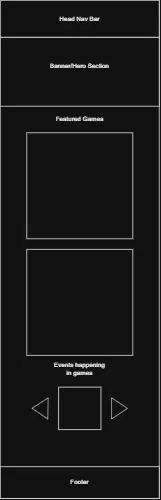
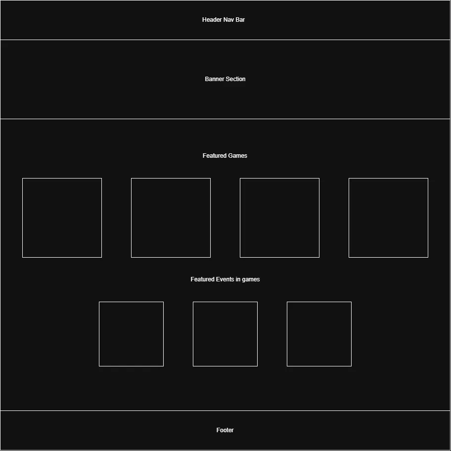

Deep Space Black
#0B0613
Used for the main page background and darker sections of the website.
Website Project Site Plan
The name DarkZife Game Guides was selected because it connects the website to the DarkZife gaming brand while clearly communicating that the site contains video game guides. The website will provide helpful information, strategies, recommendations, and resources for several different games.
Optional domain: DarkZifeGuides or GameVaultGuides
The purpose of DarkZife Game Guides is to provide players with helpful information about different video games. The website will contain guides, beginner tips, strategies, character or build recommendations, boss information, and other resources designed to help players progress through games and better understand their mechanics.
The home page will introduce the website and showcase available games and featured guides. Individual game pages will contain information and styling that is specific to each game.
The main website will use a dark purple cosmic theme inspired by galaxies, nebulae, magic, and fantasy games. The home page will primarily use dark backgrounds with glowing purple accents. Individual game pages will keep the same overall structure but may use different accent colors that better match the style of each game.
#0B0613
Used for the main page background and darker sections of the website.
#2B124C
Used for cards, navigation areas, sections, and other background elements.
#6F2DCE
Used for buttons, headings, links, and important highlights.
#B784F7
Used for borders, hover effects, glowing accents, and secondary highlights.
#F4EEFF
Used for paragraph text and other content that needs strong contrast against dark backgrounds.
The main DarkZife branding will remain purple throughout the site, but individual game pages may introduce accent colors that match the appearance of each game.
Purple and violet cosmic colors.
Green and earthy accent colors.
Gold and blue accent colors.
Blue and teal accent colors.
Red and gold accent colors.
Audiowide will be used for the site name, major headings, game titles, and other important areas. Its futuristic style helps reinforce the gaming and cosmic theme.
DarkZife Game Guides
Montserrat will be used for paragraphs, navigation links, buttons, lists, cards, and general website content because it is clean and easy to read.
Find guides, strategies, tips, and builds for your favorite games.
The wireframes will show the planned layout for both mobile and desktop versions of the home page. The wireframes will focus on structure and layout rather than colors, fonts, or detailed graphics.
The mobile version will use a stacked layout. The header will contain the site branding and a menu button. Below the header will be a hero section followed by featured games, popular guides, and the footer.

The desktop version will use a wider navigation bar, large hero section, and multiple game and guide cards displayed across rows and columns.
